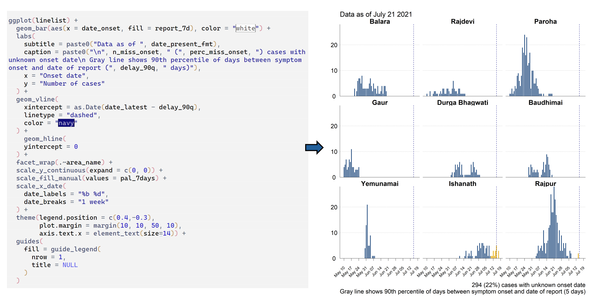
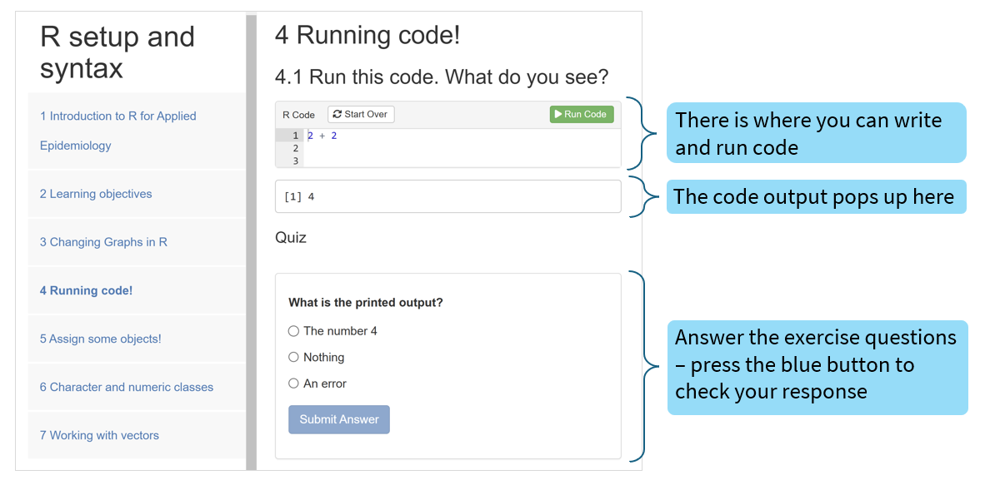
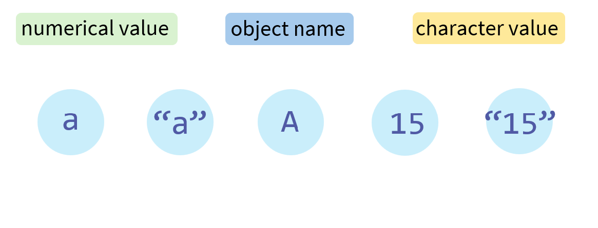
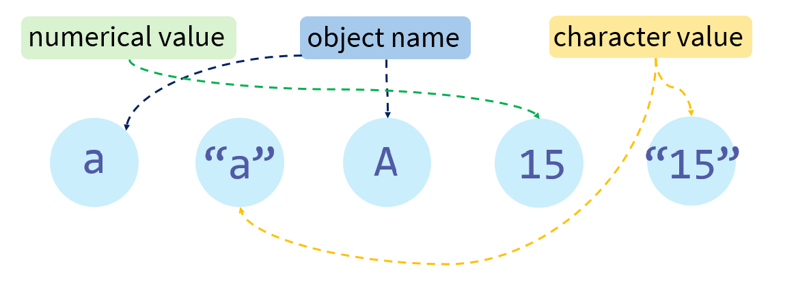

Module | Part A | Part B |
|---|---|---|
Module 1 | Starting with R: Part A | Starting with R: Part B |
Module 2 | Summarising data with functions | Summarising data with pipes |
Module 3 | Introducing RStudio | Importing data |
Module 4 | Standardising column names | Standardising column values |
Module 5 | Deduplicating rows and restructuring columns | Generating new columns from existing data |
Module 6 | Creating ggplots | Beautifying ggplots |
Module 7 | Appending and linking data | Errors, getting help, and reprex |
Module 8 | Reshaping data | Creating publication-ready tables |
Module 9 | Automated reporting with Quarto: Part A | Automated reporting with Quarto: Part B |
Module 10 | COVID-19 Case Study: Part A | COVID-19 Case Study: Part B |
Module 1A
Starting with R
[Applied Epi: Intro to R Course]
Introduction
Welcome!

Applied Epi is a non-profit created by and for epidemiologists.
We aim to improve applied epidemiology worldwide, particularly in low-resource settings.
Course objectives
Through this course, we aim that you will:
Achieve basic competency in use of R for common public health tasks such as data management, data visualization, summary tables, and automated reports
Have experience applying R to a variety of datasets
Be equipped for sustained self-learning in R
Course structure
- This course has ten 3.5 hour modules, each with two parts
- Each part has a lecture, online exercises, and a debrief
- 10 minute break between parts
Course support
You will have access to Applied Epi’s Support Desk for one-to-one support via online calls:
- During the course: Unlimited tutoring on course material
- After the course: A one-hour Code Review to help apply R to your work (valid for 12 months)
Certificate of completion
To receive a certificate of completion, you must:
- Attend 80% of the sessions (or make them up with course tutoring)
- Complete the anonymous feedback survey
- Submit your work via email to training@appliedepi.org with:
- The link to your practice post in our community forum (Module 7)
- Your Quarto file from the COVID-19 case study (Module 10)
Course preparation
You should have:
- Installed R, RStudio, and RTools
- Downloaded and unzipped the course folder (intror_course)
- Installed packages with the install_packages.R
- Set up an Applied Epi account
Module 1: Part A
Learning objectives
In Part A you will:
- Be introduced to the power of R in applied epidemiology
- Explore three key concepts: code, functions, and assignment
- Practice running code with numeric and character values
In Part B you will you dive further into functions
Power of R
About R
- What is R? R is an open-source programming language for statistical computing and graphics.
- Why R?
- 🤖 Automation: Speed up repetitive tasks
- 📊 Visualization: Create high quality and flexible figures
- 🤸♀️ Versatility: Compatible with various software and file types
- 💰 Cost-effective: Completely free
- 👐 Community: Supported by a large, active, and friendly community
Scenario
In the course exercises, you will be working through tasks as part of a fictional outbreak scenario:
Your role: You are an epidemiologist working in a surveillance unit located in the country Viraland
Outbreak! Last week an outbreak of severe gastro-intestinal disease was detected in your area. Cholera is suspected.
Investigation: Your team is monitoring the outbreak, including collecting case data from local clinics. Your colleague Pragya was analysing the data in R but has now left the job!
Sitrep
Before Pragya left, she made a video for you to understand her work:
Sitrep
Here is her output:
Sitrep
You can see how coding the sitrep in R:
- 🤖 Enables fast and reproducible data processing, analysis, and file production
- 📊 Looks professional, with high quality figures
- 🤸♀️ Is compatible with MS word, MS powerpoint… and other file types!
Scenario
- Now it will be your turn to analyse the outbreak data in R
- Let’s get started!
Code and functions
What is code?
- Code: Instructions in a specific language telling a computer how to perform a task
- Code processes an input to produce an output
Input
→
Code
→
Output
In R you will be typing your code.
Don’t worry, you’ll get used to it!
Code can be as simple as…
Code:
1 + 1
Code:
2 * 3
→
→
Output:
2
Output:
6
This take numbers as inputs!
Mathematical operators work in R code.
Code can also be…
Code:
sum(1, 1)
Code:
prod(2, 3)
→
→
Output:
2
Output:
6
We can instruct R in different ways for the same result (just like with humans!)
Instructions with words are called…
Functions
- Function: A reusable piece of code that performs a specific task
- Functions look like this:
R functions
- For example, the sum() function in R adds numbers together:
Code:
sum(1,1)
→
Output:
2
R functions
Here are other important functions that come with R:
Code:
max(1,3,5)
min(1,3,5)
c(1,3,5)
→
→
→
Output:
5
1
1 3 5
max() calculates the maximum of a series of numbers
min() calculates the minimum of a series of numbers
c() combines a series of values into a vector
💡 NOTE: A vector is a list of values of the same class (e.g. all numbers or all characters)
Introducing classes in R
Classes
- The examples you have seen show functions manipulating numeric values.
- But there are other value types (classes), most obviously character values.
c(10,20,30)
c("Hello","Hi","Wave")
→
→
This c() function combines numeric values
This c() function combines character values
❔QUIZ: How does R distinguish between
numeric and character values?
Classes
- R recognises text in quotation marks as character values (“like this”)
- This is important, for example:
Code:
sum(1,2,3)
sum("1","2","3")
→
→
This will work, as these are numeric values
This will not work, as these are recognised as character values.
💡 NOTE: If you try this code, R will say:
"Error in sum("1", "2", "3") : invalid 'type' (character) of argument"
Printing and assigning
Printing vs assigning
- So far you have been printing (displaying) your outputs
- R can store inputs and outputs if you assign them to an object like this:
Printing vs assigning
For example:
Print:
min(1,3,5)
→
1
Assign object:
y <- min(1,3,5)
→
[No printed output]
Then you can print the object!
y
→
1
Code can be long…
But code can also be powerful!
- Don’t get intimidated
- Just remember this structure:
Input
→
Code
→
Output
Exercises
Explanation
You will now start running and writing code online. The exercises look like this:
💡 NOTE: The code output box is designed to look like the console in RStudio! The [1] means that this is the first element of the output
Tasks
Go to XXXXXXX link
- Part 1: Play with Pragya’s plots in R
- Part 2: Practice running code
- Part 3: Practice assigning and printing objects
Recap
Recap
You have learned that:
- Functions are pieces of code that take inputs and produce outputs
- Helpful examples of functions in R are
sum(),min(),max(), andc()` - You can print functions, or assign a function output to an object
- You can interact objects together
- You can edit code but you must run it to take effect!
Quiz
You also learned to differentiate between values of numeric and character class.
Quiz
You also learned to differentiate between values of numeric and character class.
Match the rectangles to the circles!
Quiz answers!
You also learned to differentiate between values of numeric and character class.
Match the rectangles to the circles!
Object names
R requires that object names:
- Start with a letter, not a number
- Do not contain any spaces
It is best practice that object names:
- Do not contain special characters other than underscores or periods
- Are short and easy to understand
- Do not have the same name as an existing function
- Are lower-case (R is case-sensitive!)
✔ x
✔ df
✔ data_raw
✔ data_clean
❌ 12x
❌ median
❌ data_almost_ready_for…